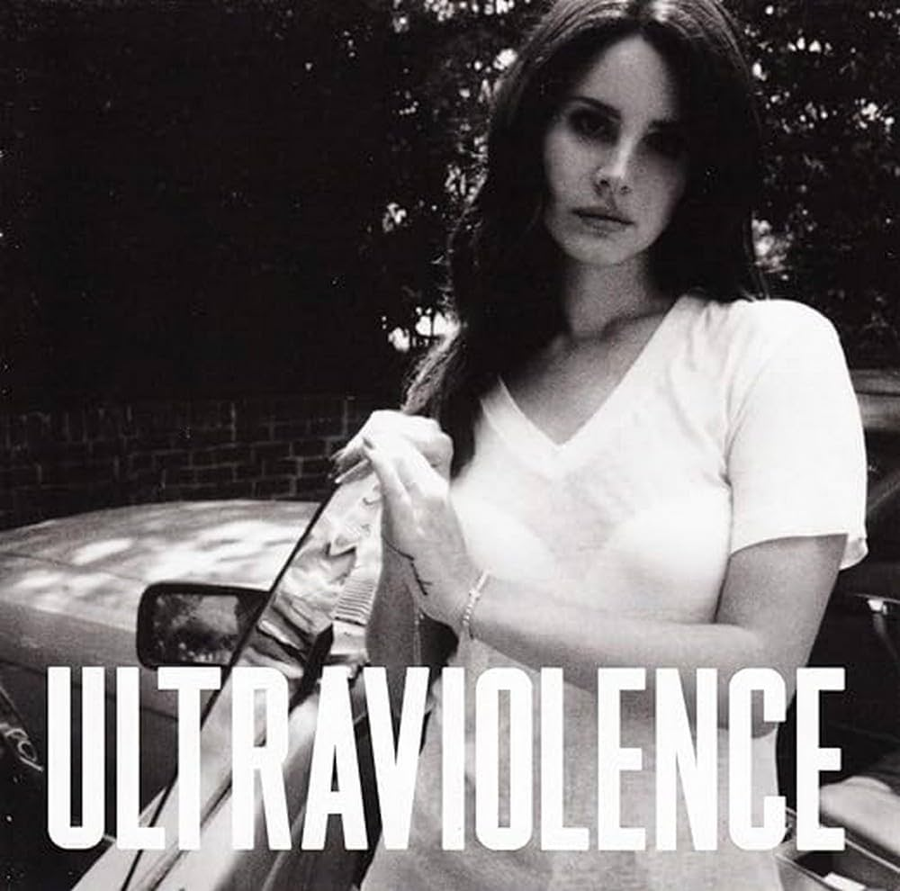
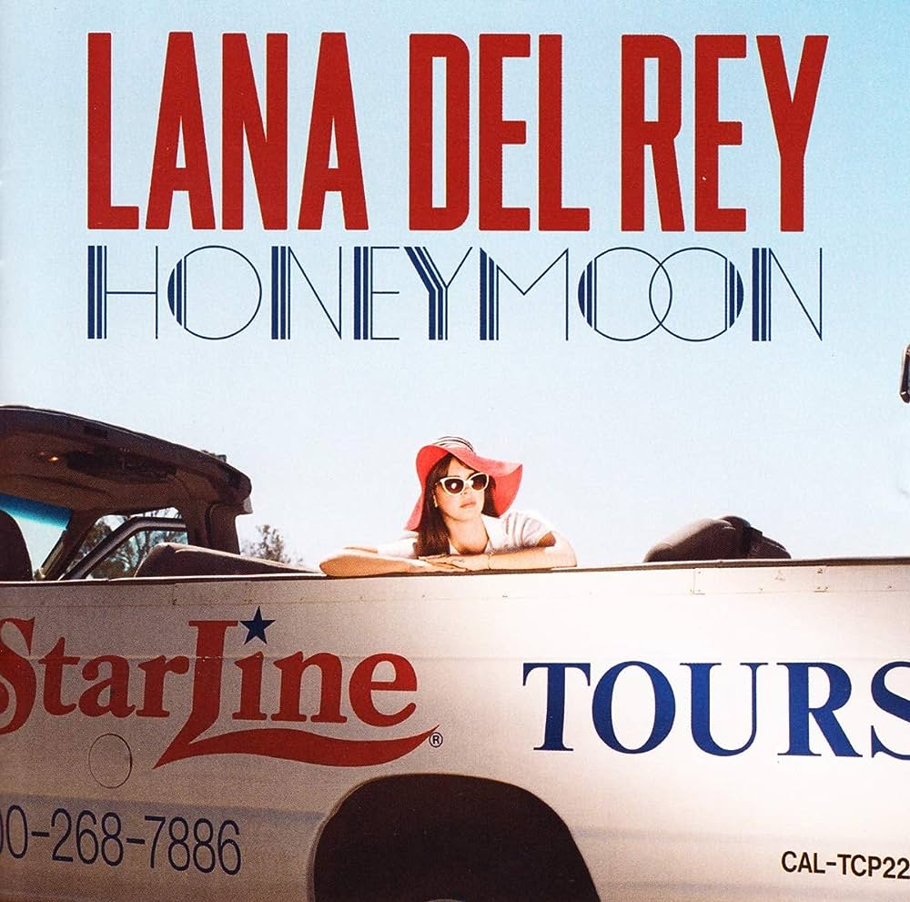

Born to Die (2012)

Primeiro álbum de estúdio de Lana Del Rey, o disco é considerado um reset-cultural abrindo novos caminhos para artistas do genêro indie. Musicalmente, Born To Die possui uma sonoridade voltada aos estilos trip hop e pop barroco, fundindo-os com elementos da música alternativa, do hip hop e, ainda, da música pop. Faixas favoritas: Lolita, Video Games, Radio
Saiba mais
Ultraviolence (2014)

Ultraviolence é o terceiro álbum de estudio da cantora estadunidense, sua maior parte de estilos são desert rock, rock psicodélico e soft rock. Ultraviolence recebeu análises positivas tanto do público quanto da crítica especializada, sendo considerados por muitos como o melhor trabalho dela. Minhas faixas favoritas do álbum são West Coast, Sad Girl e Florida Kilos.
Saiba mais
Honeymoon (2015)

Honeymoon é o quarto álbum de estudio da cantora, lançado um ano após Ultraviolence, Del Rey descreve o disco como "retrô-futurístico", derivando do genêro pop-barroco com influências de estilos jazz e trap. Minhas faixas favoritas são Swan Song, The Blackest Day e Art Deco.
Saiba mais